Production curation · 5 September 2026
New frontier releases, protocol-safe rows
The complete 21-benchmark sweep adds GPT-6 Astra and Muse Spark 1.3, resolves the independent Qwen3.8-2.4T-A95B configuration, and admits MiniMax-M3 where current first-party identity and visible source rows agree. All 28 score changes are inserts; no curated value, benchmark version, effort level, or harness is overwritten.
Live publication evidence
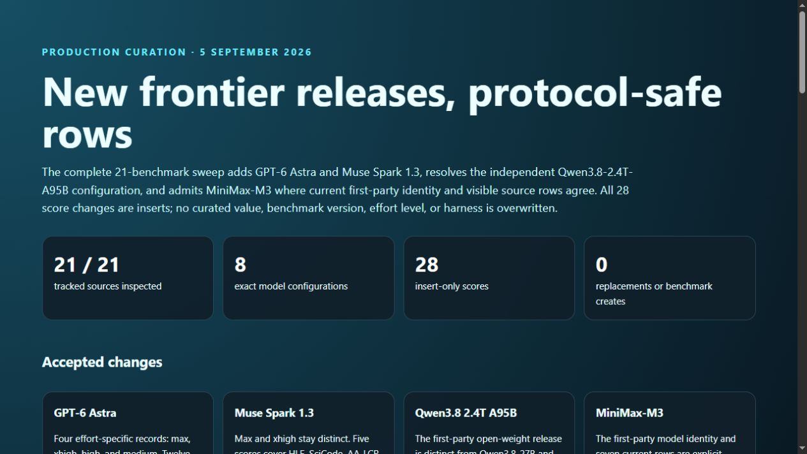
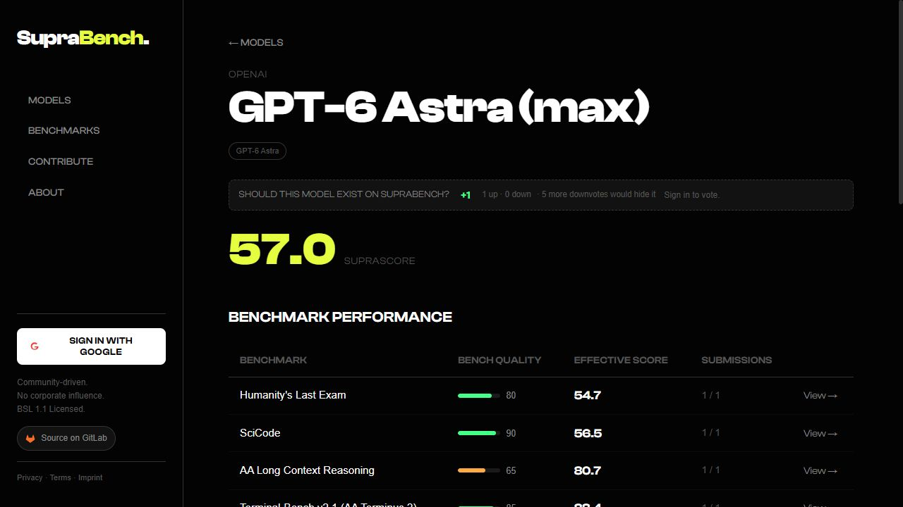
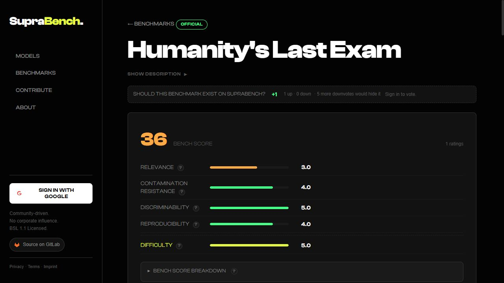
Accepted changes
GPT-6 Astra
Four effort-specific records: max, xhigh, high, and medium. Twelve visible scores span HLE, SciCode, AA-LCR, Terminal-Bench v2.1, MMMU-Pro, and DeepSWE v1.1.
Muse Spark 1.3
Max and xhigh stay distinct. Five scores cover HLE, SciCode, AA-LCR, and Terminal-Bench v2.1.
Qwen3.8 2.4T A95B
The first-party open-weight release is distinct from Qwen3.8-27B and Qwen3.8-Max. Four explicit max rows are inserted.
MiniMax-M3
The first-party model identity and seven current rows are explicit across HLE, SciCode, AA-LCR, Terminal-Bench v2.1, MMMU-Pro, Terminal-Bench Hard, and Tau2 Telecom.
| Benchmark | Accepted rows (stored raw scale) | Protocol note |
|---|---|---|
| Humanity's Last Exam | Astra max 547, xhigh 546; Muse 1.3 max 491; Qwen 2.4T max 424; MiniMax-M3 390 | Artificial Analysis score, 0–1000 storage. |
| SciCode | Muse 1.3 xhigh 597, max 583; Astra max 565; Qwen 2.4T max 541; MiniMax-M3 471 | Artificial Analysis methodology, 0–1000 storage. |
| AA Long Context Reasoning | Muse 1.3 max 843; MiniMax-M3 830; Astra max 807; Qwen 2.4T max 803 | AA-LCR v1.1 score, 0–1000 storage. |
| Terminal-Bench v2.1 (AA Terminus 2) | Astra high 899, medium 895, max 884; Muse 1.3 max 858; Qwen 2.4T max 820; MiniMax-M3 652 | Terminus 2, e2b, pass@1; kept separate from other versions and harnesses. |
| MMMU-Pro | Astra max 87, high 86, xhigh 86, medium 85; MiniMax-M3 79 | Native 0–100 percentage scale. |
| DeepSWE v1.1 | Astra xhigh 740 | Visible Best row: 74%, stored on 0–1000 scale; mini-swe-agent. |
| Terminal-Bench Hard | MiniMax-M3 424 | Artificial Analysis score, existing 0–1000 protocol. |
| Tau2-Bench Telecom | MiniMax-M3 889 | Artificial Analysis Telecom score, existing 0–1000 protocol. |
Deferred deliberately
| Candidate | Reason for no write |
|---|---|
| Terminal-Bench 4.0 | The official table is strong but mixes Claude Code, Codex, Grok Build, and mini-SWE-agent. The current schema cannot preserve that harness identity without overweighting one task suite. |
| AutomationBench-AA | The official page uses a private dataset and a stricter violation-aware metric than the separately hosted public task set. |
| AnalystAgent / ITBench-AA | Evaluation questions or material subsets remain private, so current public reproducibility is insufficient. |
| Kotlin Benchmark | Public and reproducible, but too narrow and single-language for the present general-purpose benchmark set. |
| DeepSeek V4 Pro 0813 | The leaderboard identity collides with an existing broader V4 Pro record and requires a separate source/identity migration. |
| Additional older effort rows | Gemini 3.7 Flash, Muse Glimmer, Inkling, and K2 Horizon remain for a later bounded batch with first-party identity review. |
Visible model identity evidence
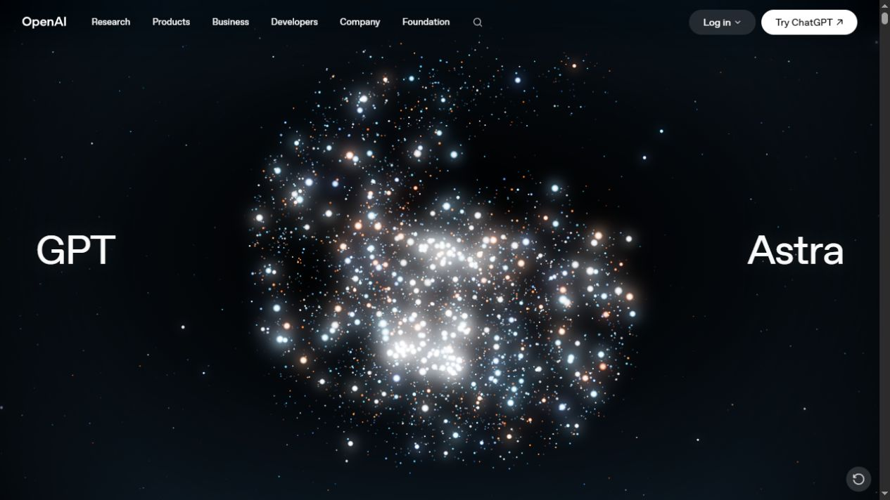
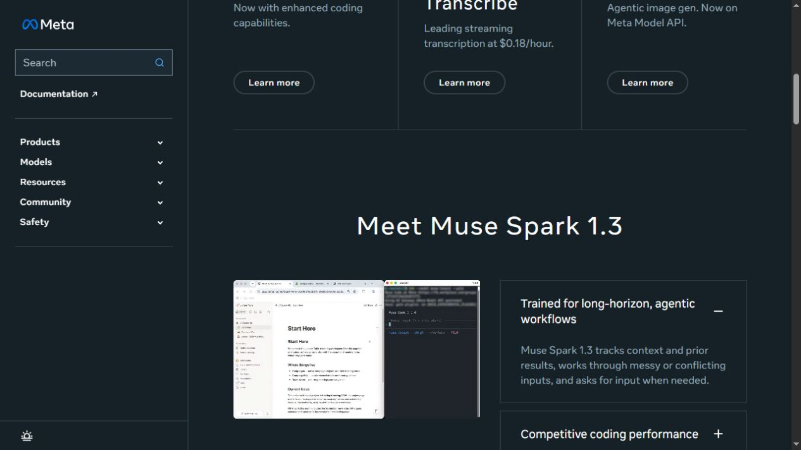
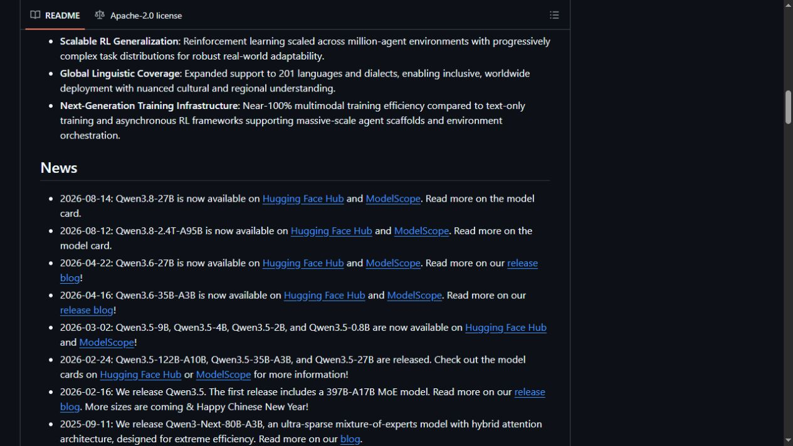
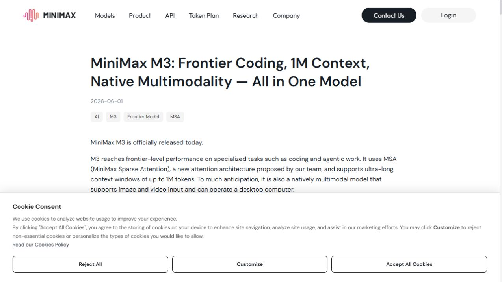
Visible score evidence
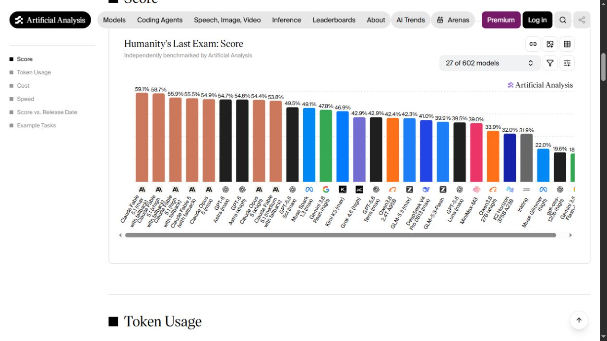
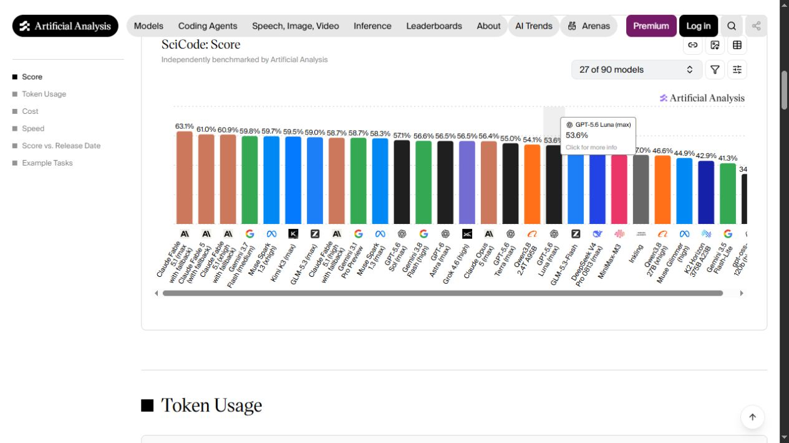
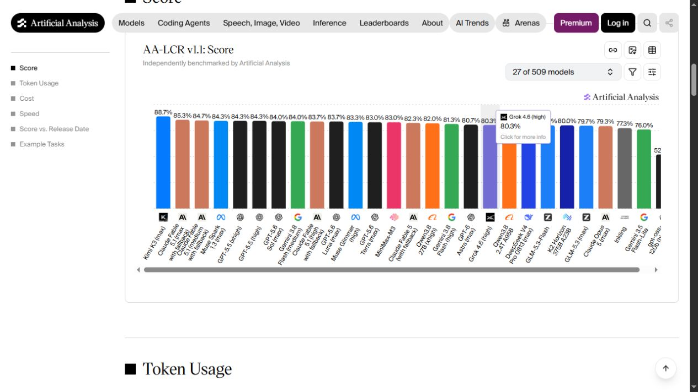
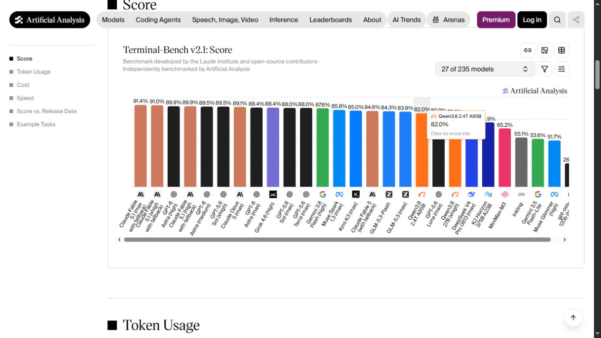
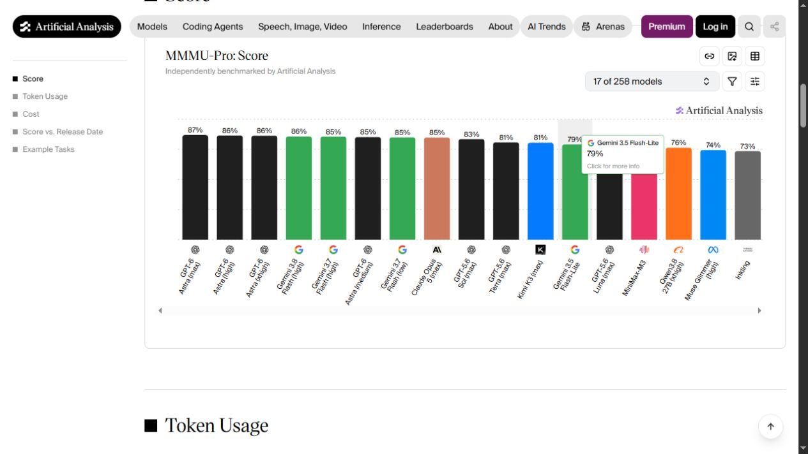
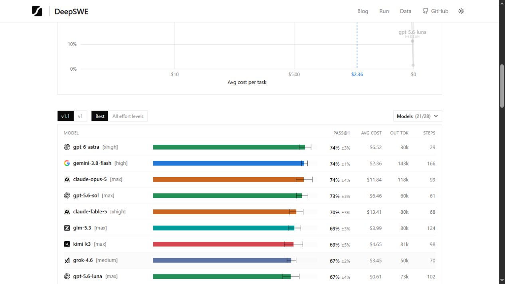
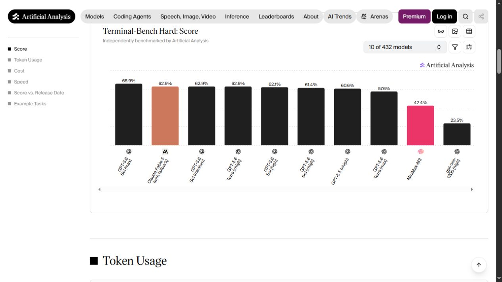
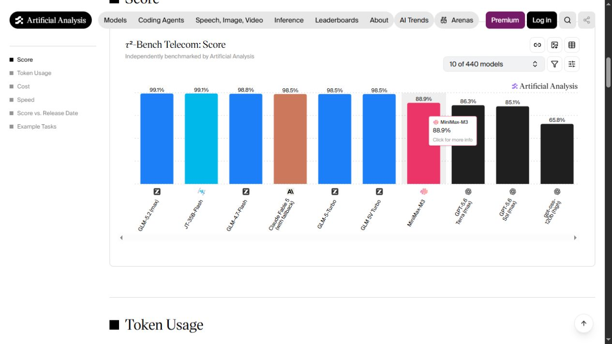
Complete sweep and release research
Tracked benchmarks: all 21 production sources were opened in the visible browser. ARC-AGI-2/3, ALE-V1, APEX, EnigmaEval, ERQA, IntPhys 2, MindCube, SkateBench, SpatialViz, SWE-Bench Pro, SWE-bench Verified, and TextQuests produced no additional protocol-safe insert in this batch.
Provider sweep: OpenAI, Anthropic, Google, SpaceXAI, Z.ai, NVIDIA, Qwen, DeepSeek, Moonshot, Meta, MiniMax, Mistral, Cohere, and AI21 were checked. GPT-6 Astra and Muse Spark 1.3 are the applicable releases since the prior run.
Research candidates: Terminal-Bench 4.0, AutomationBench-AA, AnalystAgent, ITBench-AA, and Kotlin Benchmark were evaluated and deferred for the protocol reasons above.
Validation and publication
- The pre-write example.com screenshot gate passed and every accepted source has a valid visible-browser JPEG.
- Manifest validation passed; 139/139 tests passed; tier consistency and credential scans passed.
- The pre-apply dry-run predicted exactly 8 model creates and 28 score inserts, with 0 refreshes and 0 replacements.
- The single production apply created all 8 models and mirrored all 28 inserted scores.
- The post-apply dry-run is idempotent: all 28 scores are unchanged and no write remains.
- Pre-write mirror: Convex 618, D1 618, drift 0.
- No benchmark is created, no score is replaced, and no secret-bearing file is included.
- Post-write mirror: Convex 646, D1 646, drift 0.
- Cloudflare served the new report; all 8 new model pages and all 8 affected benchmark pages passed visible-browser checks.
Run learnings
- Release-day leaderboards still require exact effort/configuration records.
- Open-weight Qwen3.8-2.4T-A95B must not be collapsed into Qwen3.8-27B or Max.
- Current private/partly-private agent benchmarks remain below the reproducibility bar.
- Terminal-Bench 4.0 still needs a harness-aware schema.